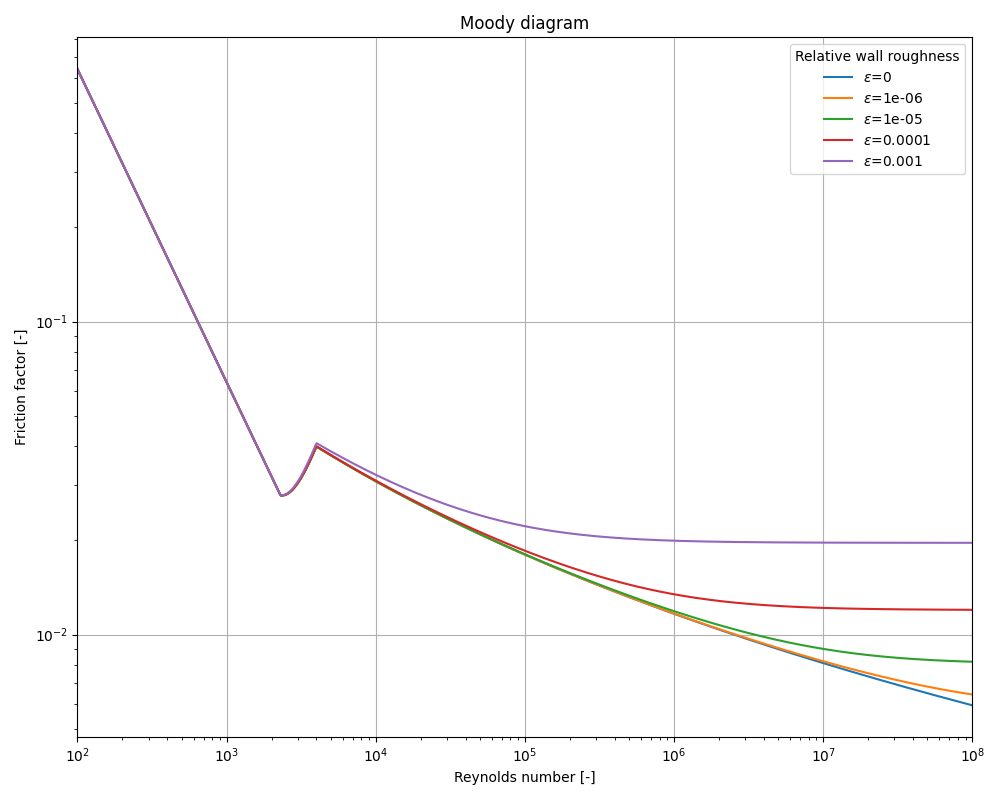

Note
Go to the end to download the full example code.
Darcy Friction Factor
This example generates a Moody diagram using the Darcy friction factor function
import warnings
import matplotlib.pyplot as plt
import pandas as pd
import numpy as np
from indsl.fluid_dynamics import Darcy_friction_factor
# suppress "No frequency information was given" warning - Frequency information is derived from datetime index
warnings.filterwarnings("ignore")
n = 1000
Re = pd.Series(np.power(10, np.linspace(2, 8, n)))
roughness_scaled_parameters = [0, 1e-6, 1e-5, 1e-4, 1e-3]
fig = plt.figure(figsize=(10, 8))
for roughness_scaled_parameter in roughness_scaled_parameters:
roughness_scaled = pd.Series(roughness_scaled_parameter * np.ones(n))
friction_factor = Darcy_friction_factor(Re, roughness_scaled, laminar_limit=2300.0, turbulent_limit=4000.0)
plt.loglog(Re.array, friction_factor.array, "-", label=r"$\epsilon$=%1.2g" % (roughness_scaled_parameter))
plt.xlabel("Reynolds number [-]")
plt.ylabel("Friction factor [-]")
plt.grid(1)
plt.xlim([min(Re.array), max(Re.array)])
plt.legend(loc=0, title="Relative wall roughness")
plt.title("Moody diagram")
plt.tight_layout()
plt.show()
Total running time of the script: (0 minutes 1.432 seconds)